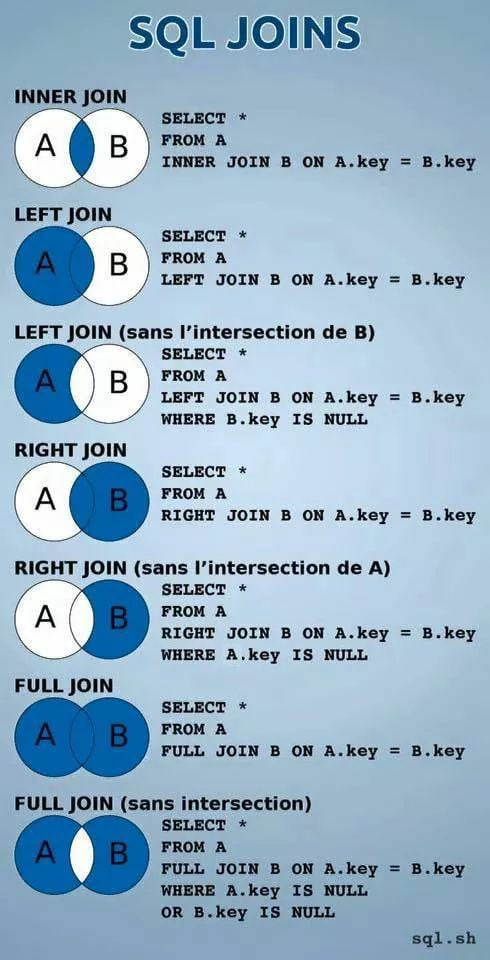

Cláusulas join (junções) são usadas para combinar dados provenientes de duas ou mais tabelas em um único conjunto de resultados, baseado em condições de join especificadas.
inner join: Retorna linhas quando houver pelo menos uma correspondência em ambas as tabelas.outer join: Retorna linhas mesmo quando não houver pelo menos uma correspondência em uma das tabelas (ou ambas). O outer join divide-se em left join, right join e cross join.Sobre a cláusula on:
on determina a condição de join, que indica como as tabelas devem ser comparadas.Uma condição de join nomeia uma coluna em cada tabela envolvida no join e indica como as colunas devem ser comparadas.
No geral, usamos o operador =
para obter linhas com colunas correspondentes. É comum usar o relacionamento de PK de uma tabela com FK de outra tabela.
Nome de coluna qualificado: Nome da coluna precedido pelo nome da tabela a qual pertence, separados por um ponto. Usamos nomes de colunas qualificados para identificar a qual tabela cada campo envolvido pertence. Isso evita erro de ambiguidade caso uma coluna tenha o mesmo nome em duas tabelas diferentes.
No caso, as tabelas clientes e produtos tem relacionamento com a tabela pedidos, sendo que esta última tem como chave estrangeira as chaves primárias das duas primeiras tabelas.
Para retornar os nomes dos produtos que estão incluídos em todos os pedidos. Vamos fazer assim:
select * from pedidos; -- Só retornará os números equivalente às chaves especificadas.
-- Inner join:
select pedidos.codigo, produtos.nome, pedidos.qtd_vendida from pedidos inner join produtos
on pedidos.cod_produto = produtos.codigo; -- Relacionamento
-- Com Alias:
select pe.codigo, pr.nome, pe.qtd_vendida from pedidos pe inner join produtos pr
on pe.cod_produto = pr.codigo
where pe.codigo = 9; -- Com where
Para fazer com três tabelas, fazemos assim:
select pe.codigo, cl.nome, pr.nome, pe.qtd_vendida from pedidos pe inner join produtos pr
on pe.cod_produto = pr.codigo
inner join clientes cl
on pe.cod_cliente = cl.codigo
where pe.codigo = 9;
select pe.codigo, cl.nome, pr.nome from pedidos pe inner join produtos pr
on pe.cod_produto = pr.codigo
inner join clientes cl
on pe.cod_cliente = cl.codigo
where cl.codigo = 1;
Veja como funcionam as joins:
View (exibição/visão) é uma tabela virtual (estrutura de dados) baseada no conjunto de resultados de uma consulta SQL, criada a partir de um conjunto de tabelas (ou outras views) presentes no banco, que servem com tabelas-base.
Mostra sempre resultados de dados atualizados, pois o motor do banco de dados recria os dados toda vez que um usuário consulta a visão.
Aplicação das views:
Vamos supor essa join:
select cl.nome as cliente, pr.nome as produto, pe.qtd_vendida as quantidade,
pe.codigo as pedido, round(pr.preco * pe.qtd_vendida, 2) as fatura
from pedidos pe inner join clientes cl
on pe.cod_cliente = cl.codigo
inner join produtos pr
on pe.cod_produto = pr.codigo;
Para simplificar a consulta acima, podemos criar uma view para fazer a consulta acima, ao invés de digitar essa join a todo momento que precisar dela.
Abaixo, criaremos uma view:
create view vendas as
select cl.nome as cliente, pr.nome as produto, pe.qtd_vendida as quantidade,
pe.codigo as pedido, round(pr.preco * pe.qtd_vendida, 2) as fatura
from pedidos pe inner join clientes cl
on pe.cod_cliente = cl.codigo
inner join produtos pr
on pe.cod_produto = pr.codigo;
PS: Podemos ver em alguns casos create or replace view. Nesse caso ele substituirá a view existente, caso já exista.
Assim, podemos fazer a consulta diretamente pela view, assim:
select * from vendas;
-- Podemos usar outras combinações também:
select cliente, pedido from vendas;
select cliente, round(sum(fatura), 2) from vendas group by cliente;
Podemos alterar as propriedades da view (e não o código), como por exemplo, para renomear ela:
alter view vendas rename to faturas;
select * from faturas;
Para deletar uma view, basta usar drop view nomedaview;, podendo usar o if exists e o cascade, caso essa view dependa de outras.
Um array é um estrutura de dados que pode ter vários dados dentr dele, separados por índices, um vetor é um array de uma dimensão.
Vamos criar uma nova tabela, assim:
create table escala_trabalho (
codigo smallint,
escala char(3)[] -- Os colchetes define um array
);
PS: Em SQL, o primeiro índice do array é 1, e não 0, como costuma ser em programação.
Inserindo dados:
insert into escala_trabalho (codigo, escala) values
(1, '{"SEG", "TER", "QUA"}'),
(2, '{"QUI", "SEX", "SAB"}'),
(3, '{"SEG", "QUA", "SEX"}');
E fazendo a consulta:
select * from escala_trabalho;
select escala from escala_trabalho where codigo = 2;
-- Para pegar o primeiro dia da semana que cada funcionário trabalha:
select codigo, escala[1] from escala_trabalho;
-- Para pegar quem trabalha na quarta-feira:
select codigo from escala_trabalho where 'QUA' = any(escala); -- Não inverta
Para alterar um array, fazemos assim:
update escala_trabalho set escala = array['TER', 'QUI', 'SAB'] where codigo = 3; -- Pode ser dessa forma, que é o ANSI SQL, ou da forma anterior
Podemos usar operadores aritméticos no PostgreSQL. Os operadores usados são os mesmos de várias outras linguagens (+, -, *, / e %). Mas podemos também usar esses operadores especificos do Postgre:
| Operador | Significado | Sintaxe |
|---|---|---|
| - | Menos Unário | -valor |
| ^ | Exponenciação | valor1 ^ valor 2 |
| |/ | Raiz Quadrada | |/ valor |
| ||/ | Raiz Cúbica | ||/ valor |
| @ | Valor Absoluto | @ valor |
PS: Lembre-se sempre da ordem de precedência da matemática.
Veja uns exemplos de uso direto no SQL:
select 10 + 12 as resultado;
select -10 + 12 as resultado;
select 10 + 6 * 3 as resultado; -- Multiplicação é feita primeiro.
select (10 + 6) * 3 as resultado; -- Parênteses é feito primeiro.
select 18 % 2 as resultado;
select 18 % 4 as resultado;
select 10 ^ 2 as resultado; -- 10 elevado ao quadrado.
select 6.02 * 10 ^ 23; -- Exponenciação é feita primeiro.
select 6.02e+23 * 5 as resultado;
select |/ 144 as resultado;
select |/ 170 as resultado;
select ||/ 170 as resultado;
select ||/ 27 as resultado;
Para fazer cálculos com os valores das colunas de uma tabela, fazemos assim:
select * from produtos;
select preco * 5 from produtos where codigo = 5;
select round(preco / 100, 2) as "Custo de uma Luva" from produtos where nome = 'Luvas de Látex';
select round(sum(preco * qtd_estoque), 2) from produtos;
Apesar do SQL ser uma linguagem estruturada, o PostgreSQL tem suporte a algumas características da programação orientada a objetos, como as heranças entre tabelas.
Crie essa tabela:
-- Tabela base, que será herdada por outras:
create table publicacao (
id serial constraint pk_id_pub primary key,
nome varchar(50),
data_pub date,
idioma varchar(25)
);
Para criar tabelas que herdem características da tabela acima, usamos a cláusula inherits com o nome da tabela a ser herdada. Veja como faremos abaixo:
create table livros (
isbn13 char(13) unique,
tipo_capa varchar(20),
edicao smallint
) inherits(publicacao); -- Ela terá todas as colunas da tabela publicação
create table revistas (
issn char(8),
numero smallint,
unique(issn, numero) -- Aplicando em duas colunas
) inherits(publicacao); -- Herdando também de publicação
Inserindo e selecionando dados na primeira tabela:
insert into publicacao (nome, data_pub, idioma) values ('Le Monde', '20220411', 'Francês'); -- Inserindo um jornal francês
select * from publicacao;
Se selecionarmos as tabelas livros e revistas, veremos todas as colunas, inclusive as herdadas, que vêm primeiro. Mas no momento elas estão vazias.
Vamos inserir um cadastro em livros:
insert into livros (nome, data_pub, idioma, isbn13, tipo_capa, edicao) values
('50 Ideias de Química', '20220202', 'Português', '9786555356519', 'Brochura', 2);
select * from livros;
PS: Se olharmos em publicação, veremos que o mesmo cadastro inserido no livro está em publicação. Ou seja: As tabelas pai recebem os dados equivalentes das tabelas filhas.
Vamos fazer o mesmo com revistas:
insert into revistas (nome, data_pub, idioma, issn, numero) values
('Saber Eletrônica', '19971201', 'Português', '01016717', 299);
insert into revistas (nome, data_pub, idioma, issn, numero) values
('Eletrônica Total', '19981101', 'Português', '01016717', 299); -- Essa não será inserida devido a constraint unique
select * from revistas;
select * from publicacao;
Podemos alterar uma tabela que é herdada, e todas as tabelas filhas receberão essa alteração. Veja abaixo:
alter table publicacao
add column n_paginas smallint;
select * from publicacao;
select * from livros;
select * from revistas;
PS: A coluna alterada vai aparecer nas tabelas filhas, mas como a última coluna.
Vamos fazer uma atualização na tabela publicação:
update publicacao set data_pub = '20200415' where id = 3;
Na tabela revista, que herda de publicação, também aparecerá alterada. Podemos alterar diretamente nela também.
JSON é o acrônimo de Javascript Object Notation. Formato aberto e popular para representação e troca de dados, assim como XML e YAML (porém mais leve e simples). É fácil para humanos ler e editar esse formato, e simples para os computadores processarem e gerarem dados JSON. É independente de linguagem de programação.
Um documento (objeto) JSON é um conjunto não-ordenado de dados armazenados em um par "nome": "valor" (campo), que inicia e termina com chaves ({}). Todos os nomes-chave são englobados em aspas duplas, e são separados de seus valores por dois-pontos. Os pares (campos) são separados um do outro por vírgulas.
Veja um exemplo de um documento JSON:
{
"chave1": "string",
"chave2": 12,
"chave3": [
"string", 21.50, "string"
],
"chave4": true,
"chave5": {
"chave6": "valor"
}
}
Podemos criar campos do tipo JSON em PostgreSQL, como veremos abaixo:
create table peds (
id serial not null primary key,
pedido json not null
);
-- Inserindo dados:
insert into peds (pedido) values
('{"comprador": "Fábio", "produtos": {"bebida": "Suco de Caju", "comida": "Pizza de Atum"}}'),
('{"comprador": "Mônica", "produtos": {"bebida": "Água Tônica", "comida": "Beirute"}}'),
('{"comprador": "Lauro", "produtos": {"bebida": "Campari", "comida": "Espaguete"}}'),
('{"comprador": "Henrique", "produtos": {"bebida": "Coca-Cola", "comida": "Feijoada"}}');
Para fazer as consultas, fazemos assim:
select * from peds;
-- Retornando nomes dos compradores em formato JSON:
select pedido -> 'comprador' as "Comprador" from peds;
-- Retornando a parte de texto (atenção na setinha):
select pedido ->> 'comprador' as "Comprador" from peds;
-- Retornando as bebidas, que estão dentro de outra chave:
select pedido -> 'produtos' ->> 'bebida' as "Bebidas Vendidas" from peds;
-- Ver quem comprou Coca-Cola:
select pedido ->> 'comprador' as "Comprador" from peds
where pedido -> 'produtos' ->> 'bebida' = 'Coca-Cola';
Veja as funções do JSON:
select json_each(pedido) from peds; -- Retorna as chaves e seus valores.
select json_each_text(pedido) from peds; -- Retorna os valores no formato de texto.
select json_object_keys(pedido -> 'produtos') from peds; -- Retorna os nomes das chaves dos produtos (ele repete)